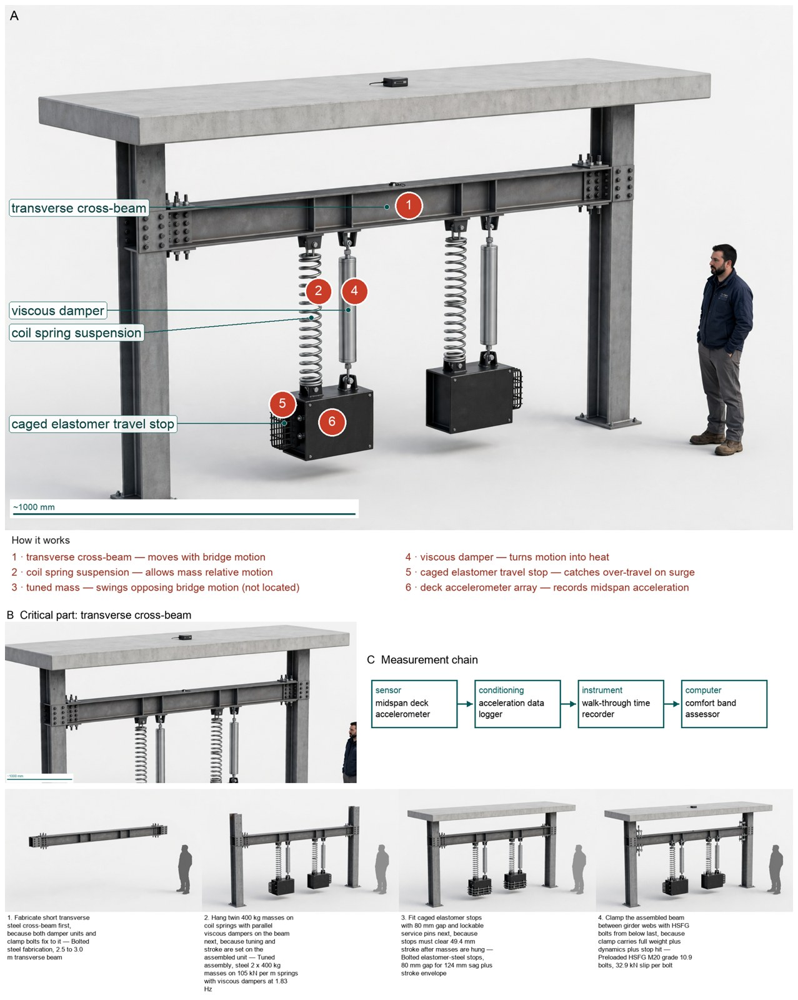
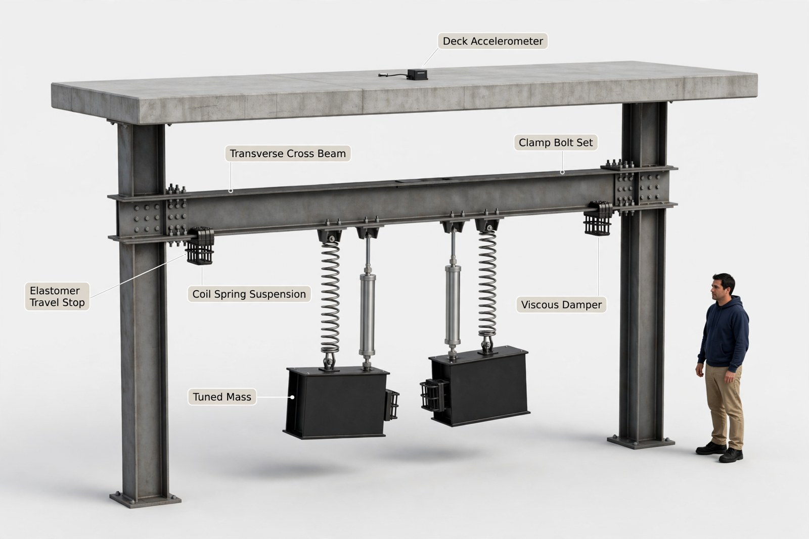
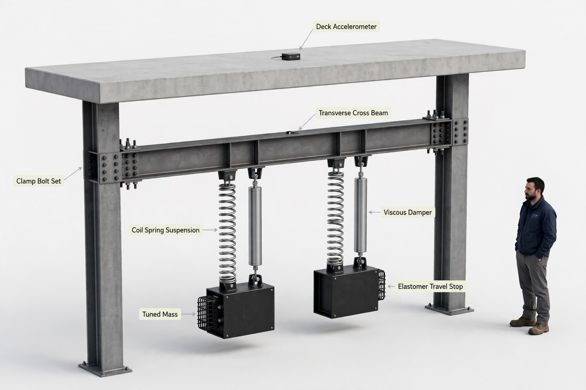

Hardware Engineer — concept report
Vibration retrofit for a lively pedestrian footbridge
A 40 m pedestrian footbridge bounces uncomfortably when crowds walk over it. Its first vertical bending mode is about 1.9 Hz with very low damping. Design a retrofit concept that brings the vibration down to a comfortable level without changing how the bridge looks from the deck.
- Span 40 m; first vertical mode about 1.9 Hz
The concept

Bridge motion shakes two hanging weights that lag behind and turn shake into heat, cutting deck shake from 8.28 m/s2 to 0.67 m/s2 while weight travel of 49.4 mm stays inside an 80 mm gap.
Vibration: main girders -> transverse cross-beam -> twin masses | Measured: midspan accelerometer -> comfort band verdict
Three decisive design choices
- Twin 400 kg pair detuned about 1.83 Hz (C20) beats single exact absorber on robustness holding 0.476 to 0.526 m/s2 and beats stiffening needing 46.5 % more stiffness as impractical and beats no-means which sizes but supplies no force.
- HSFG-clamped cross-beam carrying 7.85 kN plus 5.22 kN into girders as shear (C22) beats generic welded bracket on fatigue and install with 32.9 kN slip per bolt versus 13.1 kN demand and beats sizing-only clamp and pipe analogy lacking two-unit embodiment and beats no-means which transfers nothing.
- Paired viscous dampers with tolerant band inside twin units (C21) beats single optimum dashpot needing exact tune at same 12.0 % optimum and beats add-on parallel fluid unit lacking MTMD robustness and beats crowd case which sizes 1.66 kN force but dissipates nothing, giving 6.20 % effective damping.
Will the after-build Class III crowd walk-through confirm 0.67 m/s2 Medium comfort and file the acceptance record?
What happened
How the picture was made


What the critic flagged:
- callout: leader ends on left under-beam Elastomer Travel Stop cage, not on spring
- callout: leader ends on right under-beam Elastomer Travel Stop cage, not on damper
- callout: leader dot ends on bare top flange of cross-beam mid-span, not on bolts


Earlier faults now:
- callout: fixed
What the segmenter saw (SAM 3.1)
Code asked SAM for each part by a plain phrase and measured the boxes against what the design expects; the critic received the differences as evidence.

How the council changed
Revision 1
- Structural Dynamicist's instructions changed:
+Confirm operating directionality and station dependence in words for any layout (where along the span drive is effective and how fast it falls off-centre) and jointly confirm that station with the integration owner, because dynamics curves alone cannot stop a distributed-drive depiction that implies the wrong drive point.
- Bridge Retrofit Engineer's instructions changed:
+Name the host-system mounting interface explicitly as ordered zones from device ends into host members in viewpoint-relative words and require that any clamp or connection callout lands on that interface zone with joint confirmation by the integration owner, because capacity proof alone lets a leader drift to a neighbouring frame while listing the correct function.
- Pedestrian Comfort and Safety Assessor's instructions changed:
+State deck-appearance preservation as a countable topology ban with no hardware or added symbols above the walking surface separate from photorealistic style and check the figure for any above-deck marks before voting ready, because treating appearance as narrative lets hallucinated deck-top symbols pass through a correct comfort verdict.
- Retrofit Integration and Construction Lead's instructions changed:
+State device orientation relative to host members and viewpoint (for example transverse-perpendicular versus longitudinal-parallel), along-axis station at the intended antinode, and above-flange versus below-flange zone in words before agreement and confirm the sketch shows that orientation, because implicit centralised-midspan words let a renderer revert to a familiar longitudinal default.
References
73 sources found by the council's searches and the prior-art check (click to open)
- api.repository.cam.ac.uk — ICSV22 Template https://api.repository.cam.ac.uk/server/api/core/bitstreams/3afdf7af-401b-44f6-8bdb-b40f25db454f/content
- zenodo.org — Microsoft Word - IJLCPE010105 VENUTI_no downsample.doc https://zenodo.org/records/14335021/files/fulltext.pdf
- acoustics.asn.au — Human-Induced Vibration on Lightweight Footbridges (2024) https://www.acoustics.asn.au/conference_proceedings/AAS2024/papers/p6.pdf
- timenote.info — Millennium Bridge, London https://timenote.info/en/Millennium-Bridge-London
- source.thenbs.com — Bison Pedestrian Bridge - Bridge | Built By Bison Ltd | BIM Library https://source.thenbs.com/product/bison-pedestrian-bridge/tx9oFqy8UhJXfRf1nhvhig/9ehD4oxNE94uauVNuSYcKW?previousVersion=wcMSNA14HcSWXrhhAzWAg1
- bridgedesign.org.uk — Bridge Design| Bridge loading idealisation for grillage analysis for eurocode loading. http://bridgedesign.org.uk/tutorial/eu-grillage-example.php
- fstructures.com — Pedestrian Bridge Dynamics: Footfall-Induced Vibration and Damping http://fstructures.com/structures/pedestrian-bridge-vibration-dynamics/
- linkedin.com — Keep to the beat: The Physics of Spontaneous Synchronization https://www.linkedin.com/pulse/keep-beat-physics-spontaneous-synchronization-massimo-giuseppe-dbq0c
- eldorado.tu-dortmund.de — Load‐deformation behavior of injection bolts for maintenance of steel structures under dynamic loads https://eldorado.tu-dortmund.de/server/api/core/bitstreams/84e14c8d-162a-41d5-9379-15da57b28b64/content
- vdocuments.net — Loss of preload in pretensioned bolts - TU Delft - [PDF Document] https://vdocuments.net/loss-of-preload-in-pretensioned-bolts-tu-delft.html
- mdpi-res.com — Dynamic Sensitivity of Footbridges: Modal Identification, Human-Induced Vibrations, and Emerging Solutions for Sustainable Design https://mdpi-res.com/d_attachment/sustainability/sustainability-18-03452/article_deploy/sustainability-18-03452.pdf?version=1775118318
- mdpi.com — Vibration Serviceability Assessment of a Historic Suspension Footbridge https://www.mdpi.com/2075-5309/12/6/732/html
- mdpi-res.com — Low-Cost Angular-Velocity Measurements for Sustainable Dynamic Identification of Pedestrian Footbridges: A Case Study of the Footbridge in Gdynia (Poland) https://mdpi-res.com/d_attachment/sustainability/sustainability-17-10456/article_deploy/sustainability-17-10456.pdf?version=1763982715
- builderscience.pl — Case https://builderscience.pl/api/files/view/1515069.pdf
- 1library.net — 4.4.1 Dynamic load cases https://1library.net/article/dynamic-load-cases-footbridge-guide-setra.ye693erq
- repozytorium.biblos.pk.edu.pl — Analysis of the dynamic characteristics and vibrational comfort of selected footbridges over the S7 national road https://repozytorium.biblos.pk.edu.pl/redo/resources/28944/file/suwFiles/DulinskaJ_AnalysisDynamic.pdf
- facta.junis.ni.ac.rs — FACTA UNIVERSITATIS (2002) http://facta.junis.ni.ac.rs/aace/aace2002/aace2002-06.pdf
- dataintelo.com — Viscous Fluid Dampers for Bridges Market https://dataintelo.com/report/viscous-fluid-dampers-for-bridges-market
- grokipedia.com — Millennium Bridge, London https://grokipedia.com/page/Millennium_Bridge%2C_London
- link.springer.com — Human-induced vibration assessment of a steel arch footbridge with tapered truss cross-section https://link.springer.com/article/10.1186/s43251-025-00188-y
- structechnique.com — Retrofitting Eagles Meadow Bridge with a Tuned Mass Damper https://structechnique.com/download/15/free/aO4RBDPc
- deicon.com — | Pedestrian Bridge Vibration | | | (2022) https://deicon.com/wp-content/uploads/2022/04/Pedestrian-Bridge-vibration-control-using-tuned-mass-dampers.pdf
- pmc.ncbi.nlm.nih.gov — A Review on Comfort of Pedestrian Bridges Under Human-Induced Vibrations and Tuned Mass Damper Control Technologies - PMC https://pmc.ncbi.nlm.nih.gov/articles/PMC12387548/
- codot.gov — Bridge Design Manual Section 2 (2026) http://codot.gov/programs/bridge/bridge-manuals/design_manual/bdm_section-2_2026.pdf/@@download/file/BDM_Section%202_2026.pdf
- extrica.com — 70. Seismic performance of tuned mass damper on Shazand Railway Bridge induced by train https://www.extrica.com/article/16115/pdf
- scholarmate.com — Crowds-induced vibration control of beam footbridge equipped with multiple tuned mass dampers https://www.scholarmate.com/S/XVisN9
- ahmadsafi.com — Design Engineer — Design Constraints | CDOT Steel Bridges https://www.ahmadsafi.com/DSE Consultant — Design Constraints.html
- aura.abdn.ac.uk — 1 Experiments on coldformed steel momentresisting connections with 2 bolting frictionslip mechanism https://aura.abdn.ac.uk/server/api/core/bitstreams/50affc7a-7e82-489d-885e-8c0f1816a225/content
- researchgate.net — (PDF) Loss of preload in pretensioned bolts https://www.researchgate.net/publication/321331358_Loss_of_preload_in_pretensioned_bolts
- henning-gmbh.de — a P000498 https://www.henning-gmbh.de/index.php5/en/Weight-is-Paramount-Mini-Measuring-Block-for-QS3/c-PROMOTION/a-P000498?sid7C5C4CC6642D458C9EC898919A0C3981=4dnujkhodhj4hin5ksmavosjv7
- vdocuments.net — analysis on the optimum performance of tuned mass damper eurodyn2014cdpapers241ms09abs.html (2014) https://vdocuments.net/amp/analysis-on-the-optimum-performance-of-tuned-mass-damper-eurodyn2014cdpapers241ms09abs.html
- scribd.com — Chapter 15 PDF https://www.scribd.com/document/439652787/Chapter-15-pdf
- accio.com — Seismic Pipe Hanger: Secure & Reliable Support https://www.accio.com/plp/seismic-pipe-hanger
- chinapipeclamp.en.made-in-china.com — UL CE Certified U Shaped Pipe Clamp with Quick Lateral Bracing Universal Hanger System https://chinapipeclamp.en.made-in-china.com/product/sQcRhOiJEwVW/China-UL-CE-Certified-U-Shaped-Pipe-Clamp-with-Quick-Lateral-Bracing-Universal-Hanger-System.html
- core.ac.uk — View metadata, citation and similar papers at core.ac.uk brought to you by CORE https://core.ac.uk/download/77031822.pdf
- publicacoes.softaliza.com.br — Humaninduced vibration analysis and human comfort assessment of pedestrian footbridges (2020) https://publicacoes.softaliza.com.br/cilamce2020/article/download/6207/5258/2807
- koreascience.kr — Effective Vibration Control of Existing Footbridge Using Tuned Mass Damper https://koreascience.kr/article/CFKO200311922784278.pub
- academia.edu — Implementation of a Passive Control System in a Lively Footbridge https://www.academia.edu/110792396/Implementation_of_a_Passive_Control_System_in_a_Lively_Footbridge
- structurae.net — [PREVIEW] Economic Approach to Damping Trail-Style Footbridges https://structurae.net/fr/litterature/papier-de-conference/economic-approach-to-damping-trail-style-footbridges/apercu-download?download=false
- structurae.net — The https://structurae.net/fr/litterature/papier-de-conference/design-and-construction-of-the-stadium-footbridge-st-helens-uk
- academia.edu — Design of a Semi-active Tuned Mass Damper for the Science Museum Footbridge of Valladolid https://www.academia.edu/53208173/Design_of_a_Semi_active_Tuned_Mass_Damper_for_the_Science_Museum_Footbridge_of_Valladolid
- link.springer.com — Multi-Passive Tuned Mass Damper for Single-Mode Control of Slender Lab-Scale Timber Footbridge https://link.springer.com/chapter/10.1007/978-3-031-96114-4_73
- oasys-software.com — Structural design and dynamic assessment of an asymmetric cable-stayed footbridge using Oasys GSA https://www.oasys-software.com/?p=15356
- idus.us.es — Estimating robust optimum parameters of tuned mass dampers using multiobjective genetic algorithms https://idus.us.es/bitstream/handle/11441/36164/CMMoST%202015_Jimenez-Alonso_Estimating.pdf?sequence=1&isAllowed=y
- koreascience.or.kr — Effective Vibration Control of Existing Footbridge Using Tuned Mass Damper https://koreascience.or.kr/article/CFKO200311922784278.page?&lang=en
- 1library.net — Additional damping devices - Modification of structural damping https://1library.net/article/additional-damping-devices-modification-of-structural-damping.zpgj1mrz
- thefreelibrary.com — Lateral Vibration Control of Long-Span Small-Radius Curved Steel Box Girder Pedestrian Bridge with Distributed Multiple Tuned Mass Dampers. - Free Online Library https://www.thefreelibrary.com/Lateral+Vibration+Control+of+Long-Span+Small-Radius+Curved+Steel+Box...-a0729497874
- vibratec.org — Case Study: Tuned Mass Dampers for Pedestrian Bridge in Malmö https://www.vibratec.org/article/case-study-tuned-mass-dampers-for-pedestrian-bridge-in-malmo/
- thuvien.huce.edu.vn — Numerical and Experimental Evaluation of the Dynamic Performance of a Footbridge with Tuned Mass Dampers https://thuvien.huce.edu.vn/kiposdata1/Baotapchi/Tapchinuocngoai/Journal%20of%20Bridge%20Engineering/2016/Journal%20of%20Bridge%20Engineering.Vol%2021.Iss%208/PDF/Journal%20of%20Bridge%20Engineering.Vol%2021.Iss%208.A7.pdf
- scilit.net — Vibration control of a slender footbridge using passive and semiactive tuned mass dampers https://www.scilit.net/publications/55e8222a5fb04eca89ebaefa665d9e58
- mub.eps.manchester.ac.uk — Vibration Reduction https://www.mub.eps.manchester.ac.uk/structural-concepts/vibration-reduction/
- alexandria.press — The Synchronized Footbridge https://www.alexandria.press/read/latent-fragility/the-synchronized-footbridge.html
- eureka.patsnap.com — A frequency continuously adjustable mass damper - Eureka | Patsnap https://eureka.patsnap.com/patent-CN104929268B
- bwk.kuleuven.be — Vibration mitigation by means of hysteretic tuned mass dampers https://bwk.kuleuven.be/apps/bwm/eurodyn2011/papers/MS09-531.pdf
- mediatum.ub.tum.de — Tuned Mass Dampers for Vibration Control of https://mediatum.ub.tum.de/doc/1762603/document.pdf
- dspace.vut.cz — Tuned mass dampers ‐ evaluation of the effect on two real footbridges https://dspace.vut.cz/server/api/core/bitstreams/fe91b2bb-e77d-41e7-847d-e32cfb3c7d2a/content
- fullscaledynamics.com — Vibration Simulations and Tuned Mass Damper Design for Castle Bridge, Bristol https://www.fullscaledynamics.com/project/vibration-simulations-and-tuned-mass-damper-design-for-castle-bridge-bristol/
- patents.google.com — CN104929268A - Frequency continuously adjustable mass damper https://patents.google.com/patent/CN104929268A/en
- files.kgf.cz — Untitled https://files.kgf.cz/yrlh8n556n12/Tuned%20Mass%20Damper%20-%20Evaluation%20of%20the%20Effect%20on%20two%20real%20Footbridges%20%28TMD%29_Conference%20Steel%20Bridges%202024_KGF%20hydraulika.pdf?download
- pure.tue.nl — Eindhoven University of Technology MASTER Effect of tuned mass dampers in footbridge design https://pure.tue.nl/ws/files/46926621/638689-1.pdf
- maurer.eu — Retrofitted damping without intrusion into the bridge structure https://www.maurer.eu/en/company/news/article/nachtraegliche-bedaempfung-ohne-eingriff-ins-brueckenbauwerk/
- newcivilengineer.com — PUTTING A DAMPER ON THINGS https://www.newcivilengineer.com/archive/putting-a-damper-on-things-14-06-2001/
- mdpi.com — A Review on Comfort of Pedestrian Bridges Under Human-Induced Vibrations and Tuned Mass Damper Control Technologies https://www.mdpi.com/1996-1944/18/16/3903
- doaj.org — Optimization Analysis of Vibration Reduction for Large-Span Steel Pedestrian Bridges Based on Tuned Mass Damper Inerter System – DOAJ https://doaj.org/article/ac49c9fe43bb4364b3fb88566ec03cfd
- visualize.jove.com — A Review on Comfort of Pedestrian Bridges Under Human-Induced Vibrations and Tuned Mass Damper Control Technologies https://visualize.jove.com/40870220
- ascelibrary.org — Twin Rotor Damper for Human-Induced Vibrations of Footbridges https://ascelibrary.org/doi/abs/10.1061/%28ASCE%29ST.1943-541X.0002654
- researchgate.net — Passive damping devices for earthquake protection of bridges and buildings https://www.researchgate.net/publication/273801515_Passive_damping_devices_for_earthquake_protection_of_bridges_and_buildings
- maurer.eu — Single Page View | MAURER SE. All rights reserved. https://www.maurer.eu/en/news-pr/press-releases/single-page-view/?tx_news_pi1%5Baction%5D=detail&tx_news_pi1%5Bcontroller%5D=News&tx_news_pi1%5Bnews%5D=1038&cHash=c03cea540a3be77ccd861c3f2dd06212
- footbridge2017.com — Footbridge 2017 Berlin — Tell a story https://www.footbridge2017.com/
- files.eccomasproceedia.org — COMPDYN 2015 https://files.eccomasproceedia.org/papers/compdyn-2015/712.pdf?mtime=20170329171626
- marketresearch.com — Tuned Mass Damper Global Market Insights 2025, Analysis and Forecast to 2030, by Manufacturers, Regions, Technology, Application, Product Type https://www.marketresearch.com/Prof-Research-v4036/Tuned-Mass-Damper-Global-Insights-42775743/
- scribd.com — Seismic Protection with Mass Dampers https://www.scribd.com/document/312613078/Mass-Dampers
- eng-tips.com — Questing regarding the use of TMD dampers https://www.eng-tips.com/viewthread.cfm?qid=496547
Files
- Whiteboard replay
- Reference list (Markdown)
- iter_00 transcript · whiteboard
- iter_01 transcript · whiteboard
Run 20261104-142331_vibration-retrofit-for-a-lively-pedestri · total cost $4.82 · conceptual illustration — physical performance not established.